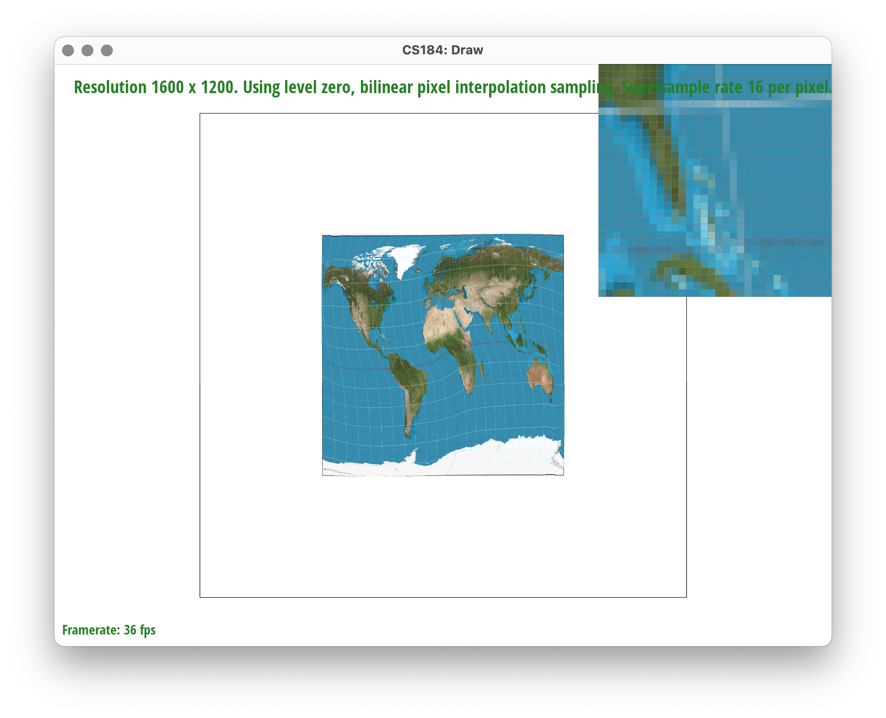

Team Members: Jason Yang and Akhil Sachdev
Triangles are rasterized by first calculating the bounding box of the triangle, which is taking the min and max of each x and y value corresponding to the three verticies of the triangle. Then, we loop through each coordinate contained within the bounding box and then check to see whether it lies in the plane defined by the three lines defined by those three points. If it is, then we shade the pixel with the specified color.
Our algorithm is no worse than one that checks each sample within the bounding box of the triangle because it only checks the samples within the bounding box of the triangle. This is calculated by taking the min and max of each x and y value corresponding to the three verticies of the triangle.

The supersampling algorithm is very similar to the rasterization algorithm but with a minor modification. We change the dimensions of the sample buffer array's length such that in addition to being width*height, we also multiply it by the number of samples per pixel to make it width*height*sample rate. This change is reflected in the set_sample_rate function and the set_framebuffer_target functions where sample_buffer is resized. Then, we sample every single subpixel in the bounding box by using two more for loops, each going from 0 to sqrt(sample_rate) and increasing by 1 every iteration inside of the two for loops already in place for height and width. We then populate the pixel color based on whether the subpixel is inside of the triangle dictated by the three verticies. Then, at the end, in the resolve_to_framebuffer function, we average out the r, g, b values from each of the subpixels inside each pixel and display the averaged out values subpixel r, g, b values to correspond to one pixel of the framebuffer.
In the version with only one sample per pixel, there are lots of jagged lines because the pixel can only be filled with the color red if the center of the pixel is inside of the triangle defined by the red lines. Therefore, it is somewhat of an all or nothing kind of filling. As the supersampling rate increases, these pixels on the edge of the red triangle start taking on values that have more variations of red, and there are more pixels that are not completely white. This makes it seem as if there are less jagged pixels taking up the space. This is because in supersampling, the pixels are sampled at a much higher rate - sample rate times higher, and when the supersampled pixels' r, g, b values are averaged to give the original pixel's color, it makes it seem less jagged.
I was trying to make cubeman ride a snowboard.
Barycentric coordinates are used to represent points within a triangle for rendering and texture mapping. In a traditional 2-D view of a triangle, a point is defined by an (x, y) coordinate. In barycentric coordinates, a point is defined by the weighted average of the three vertices that define a triangle and is represented by the (alpha, beta, gamma) coordinate system. For example, a triangle is defined by (x, y) coordinates Va, Vb, and Vc. A vertex V can be represented by V = alpha * Va + beta * Vb + gamma * Vc. Another way to view the alpha, beta, and gamma values is to view them as proportional areas that appear between the edges of a triangle and the edges that appear when you draw a line from each of the vertices to the point V.
Pixel sampling is the act of taking coordinates from an screen space (x, y) coordinate and mapping them to the separate texture space (a, b) coordinate. These two coordinates are related related to each other in the sense that the shape of the triangle in screen space is governed by the triangle's three vertices defined in the screen space and the colors being filled in the triangle are from the texture space's representation of the triangle. The barycentric coordinate representation of each point within each coordinate space's triangle is the same, so there can be a 1:1 mapping between the two. Since we still need to sample pixels from the texture space, we need to determine which pixel to choose from. The pixel can be chosen either with the nearest neighbor pixel, which chooses the pixel whose center is of shortest distance from the pixel that is being sampled. An alternate approach is bilinear sampling, which takes a weighted average between the values in the four neighboring pixels based on the distance to each pixel.
nearest neighbor sampling, 1 sample per pixel
bilinear sampling, 1 sample per pixel

nearest neighbor sampling, 16 samples per pixel
bilinear sampling, 16 samples per pixel
Bilinear sampling works far better than nearest neighbor when the sample rate is 1 sample per pixel, since there are far less jaggies when the weighted average is taken to produce the color. There will be a large difference betwen the two methods when the supersampling rate is low and when there are large variations in color that are described by a complex shape. The difference is far less pronounced when the sample rate is 16 pixels, and it is almost indistinguishable. This may be because the pixels are already supersampled, so the difference the nearest pixel and the weighted average is quite small. The nearest neighbor sample with 16 samples per pixel is far smoother than the bilinear sample with 1 sample per pixel since there are just far more pixels to make the calculation, and when taking the average of 16 samples within the same pixel, it is better than doing the weighted average of the 4 surrounding pixels.